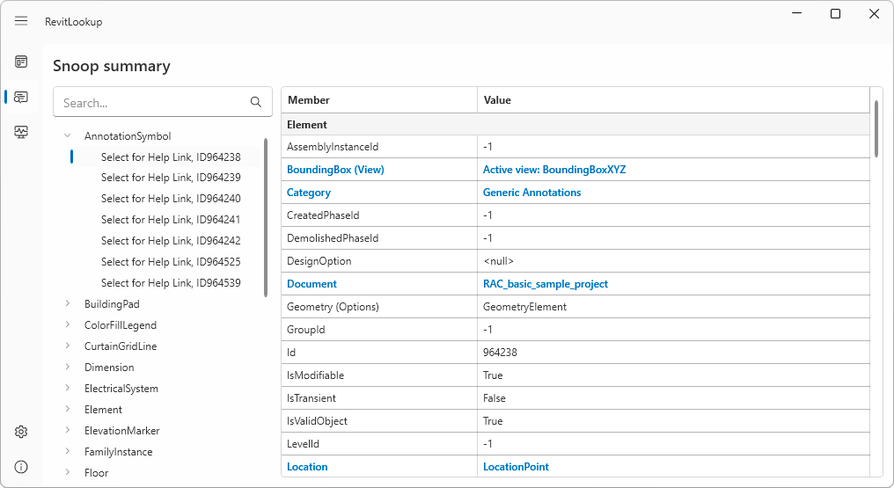
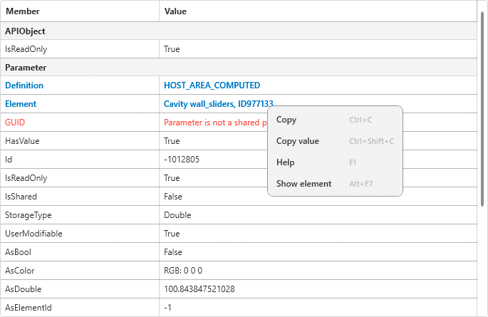
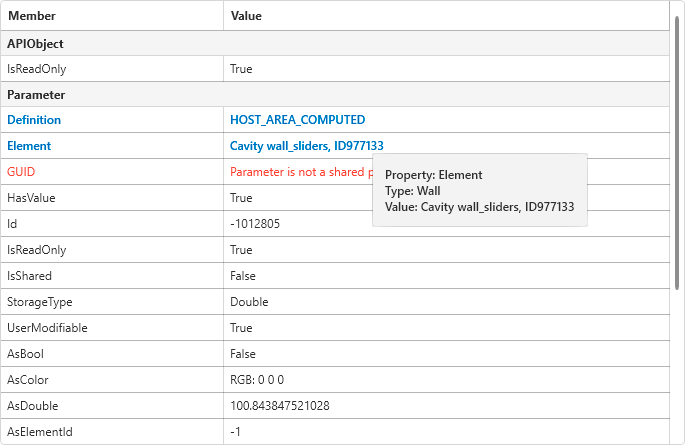
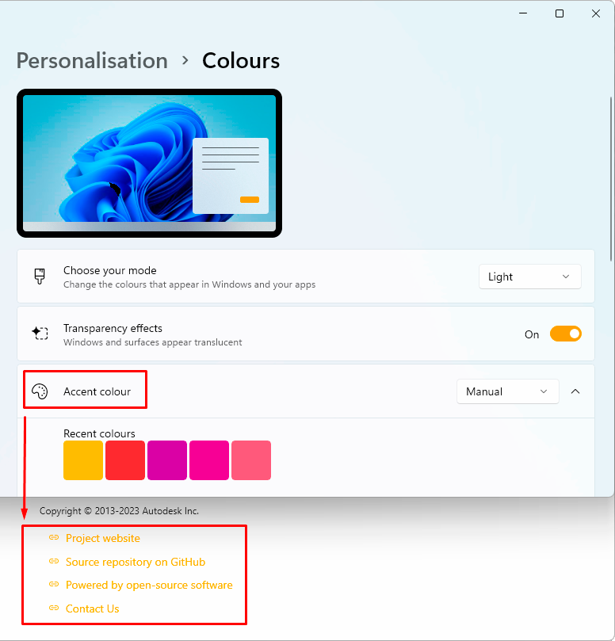
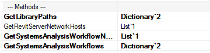
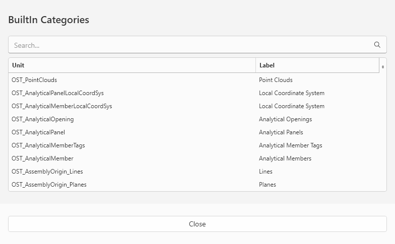
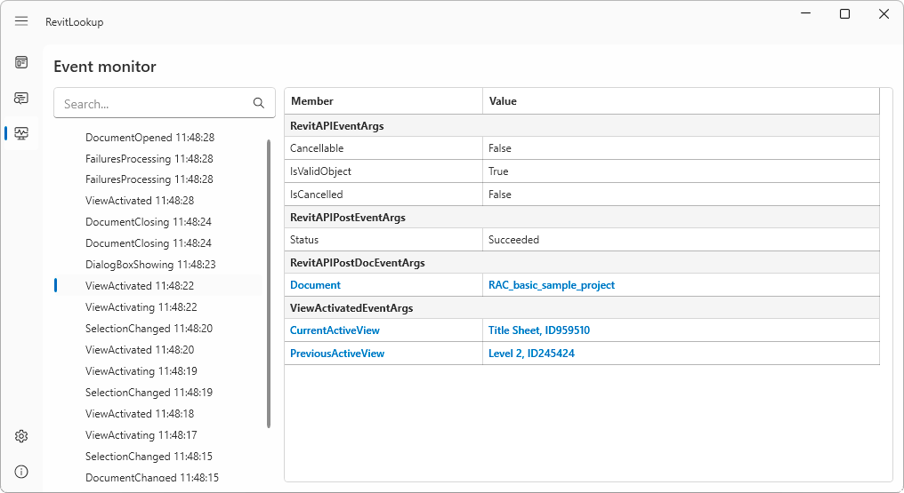
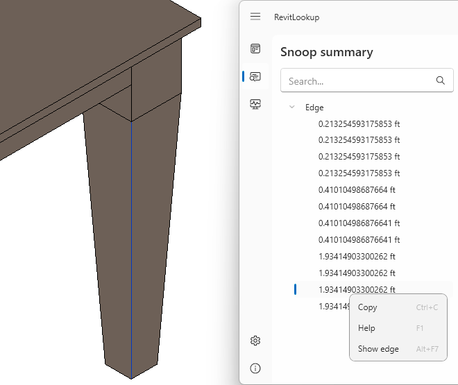

Further improving on last year's groundbreaking speed record, Roman Nice3point was prepared well in advance to release the corresponding RevitLookup 2024 update:
In this release, the entire code base has been completely rewritten from scratch with a redesigned user interface. New tools, OTA update, Windows 11 support:



Wiki page: Context actions






| Before | Now |
|  |  |

GetEntity() methodAdWindows.dll and learn how the ribbon and user interface in Revit are arranged

RevitAPI.dll and RevitAPIUI.dll libraries are available.
The search bar is used to filter results:
Name, Id, UniqueId, IfcGUID and Type IfcGUID parameters:
Wiki page: Search elements
Showing elements:

Showing faces (Revit 2023 or higher):

Showing solids (Revit 2023 or higher):

Showing edges (Revit 2023 or higher):


Designed & Developed by Nice3point 🕊
Ever so many thanks to Roman Nice3point for his tremendous work!
Check out the RevitLookup discussions page aka RevitLookup Ideas to discuss your RevitLookup wishes and dreams with the developer community.
Here is one of the open discussions including a poll asking for your preference:
Discussion about the Snoop Selection button placement #151:
What do you think of the new location of the "Snoop Selection" button? How do you feel about it and what is your opinion on it, should it be kept or made optional? The idea is that Revit automatically opens "Modify" tab, making the Snoop button available at all times.